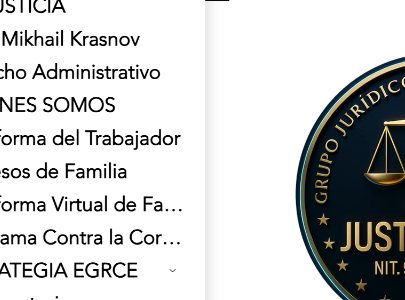
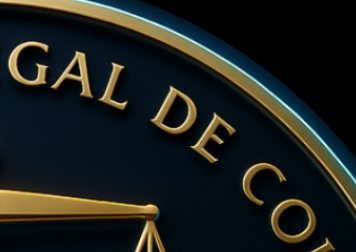

El gélido viento de Tunja parecía susurrar el inminente choque de fuerzas. En el centro del tablero político se encontraba Mikhail Krasnov, el inusual alcalde de origen ruso que había sacudido las elecciones y cautivado a las masas. Era un fenómeno mediático, un forastero que prometía erradicar la política tradicional. Pero mientras la ciudad celebraba, en los pasillos de la justicia se gestaba una tormenta perfecta liderada por una mente implacable: David Alejandro Ávila.
Como Representante Legal del Grupo Jurídico Legal de Colombia SAS, David no se dejó deslumbrar por el espejismo del "Zar de Tunja". Sabía que la ley no entiende de popularidad, sino de hechos. Con la precisión de un cirujano y la paciencia de un maestro de ajedrez, su equipo comenzó a escudriñar cada documento, cada firma y cada movimiento del alcalde antes de su elección.
El ambiente en las oficinas del Grupo Jurídico era de pura adrenalina. Noches en vela frente a pantallas y montañas de expedientes finalmente rindieron frutos cuando David encontró el talón de Aquiles, la pieza que derrumbaría el castillo de naipes: un contrato. Krasnov había firmado como docente y contratista con la Universidad Pedagógica y Tecnológica de Colombia (UPTC) dentro de los doce meses previos a la elección. Una violación flagrante al régimen de inhabilidades consagrado en la legislación colombiana.

La demanda de nulidad electoral fue radicada como un misil teledirigido. La batalla escaló rápidamente hasta los estrados del Tribunal y las imponentes salas del Consejo de Estado en Bogotá. El país entero tenía los ojos puestos en el caso.
La defensa de Krasnov intentó maniobrar desesperadamente. Argumentaron excepciones, apelaron a tecnicismos, e intentaron minimizar el impacto del contrato. Sin embargo, en cada audiencia, David Alejandro Ávila se mantenía inquebrantable. Su exposición fue una obra maestra de la litigación. No solo presentó las pruebas documentales irrefutables, sino que desarmó uno a uno los argumentos de la contraparte, demostrando que nadie, sin importar su origen o su fama, está por encima de la Constitución.

El clímax llegó el día del fallo. El silencio en la sala era sepulcral antes de la lectura. Cuando el magistrado pronunció las palabras que decretaban la nulidad de la elección de Mikhail Krasnov, el eco resonó en toda la historia política de Boyacá. El alcalde caía, destituido por el peso implacable de la norma.
Las cámaras buscaron de inmediato al estratega detrás de la hazaña. David Alejandro Ávila, sereno pero victorioso, había demostrado el poder de la disciplina jurídica. El Grupo Jurídico Legal de Colombia SAS no solo había ganado un caso de altísimo perfil; había reescrito el destino de una ciudad entera, consolidándose como una fuerza imparable en el derecho colombiano.
Ficha Técnica del Proceso y Nulidad Electoral
Tribunal de Decisión: Sección Quinta del Consejo de Estado (Segunda Instancia) / Tribunal Administrativo de Boyacá (Primera Instancia).
Normativa Vulnerada: Artículo 95 de la Ley 136 de 1994 (modificado por el Artículo 37 de la Ley 617 de 2000), referente a la prohibición de suscribir contratos con entidades públicas en el municipio de elección en los 12 meses anteriores.
El Hecho Probado: Contrato de prestación de servicios docentes hora cátedra con la Universidad Pedagógica y Tecnológica de Colombia (UPTC), firmado e iniciado dentro de la zona de inhabilitación electoral.
Línea de Tiempo del Litigio Estratégico
¿Necesita Asesoría o Representación en Litigio Estratégico?
Casos de alta complejidad y derecho administrativo electoral. Consulte directamente con la abogada Jessica Lorena Ramírez a través de WhatsApp.
Asesoría Gratuita por WhatsApp